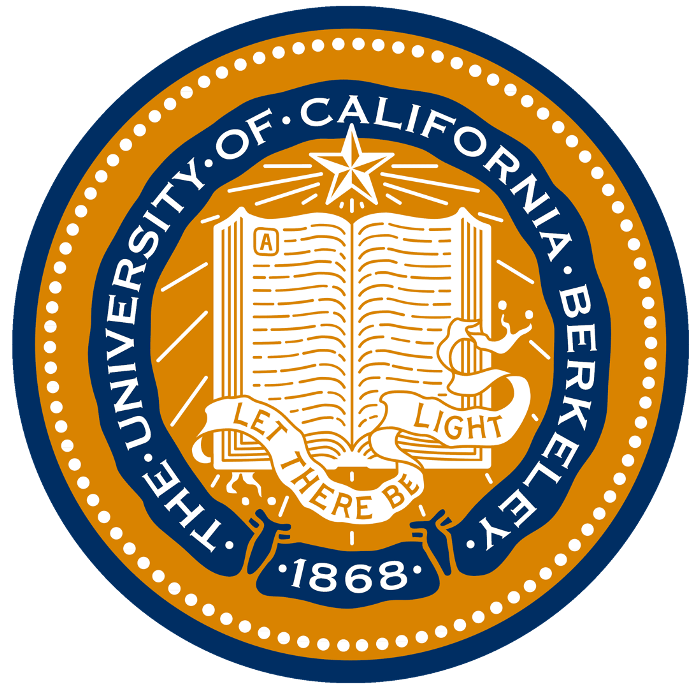
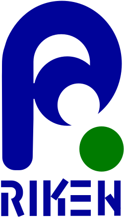

About Me
Developing nonlinear soft X-ray spectroscopy to watch electrons, spins, and orbitals respond to light on femtosecond timescales.
I am a Ph.D. candidate in Iwao Matsuda Group at the Department of Chemistry, School of Science, The University of Tokyo. My research sits at the intersection of ultrafast light–matter interaction, nonlinear optics, and soft X-ray science at X-ray free-electron lasers.
Through experiments primarily conducted at SACLA BL1, I develop spectroscopic and imaging techniques that resolve element-specific dynamics of electronic, spin, orbital, and symmetry-related phenomena — in systems relevant to semiconductors, energy materials, and magnetic information storage. My goal is to uncover the microscopic physics of these light-driven processes, and to advance coherent, element-selective probes for the materials science of the next decade.
News
2026.03
Published “Seeing Trajectory Without Imaging by Exploring Both Radial Momentum and Orbital Angular Momentum of Light” in Laser & Photonics Reviews.
2026.03
Published “Rotational Anisotropy Soft X-ray Second-Harmonic Generation from GaAs” in e-Journal of Surface Science and Nanotechnology.
2026.03
Received the ISSP Best Poster Design Award at the Institute for Solid State Physics, The University of Tokyo.
Show earlier news
2025.11
Concluded my visiting scholarship at UC Berkeley, Zuerch Lab, Sep-Nov 2025.
2024.10
Awarded the SPRING-GX Fellowship for doctoral study at The University of Tokyo.
2024.10
Started my Ph.D. in Chemistry, School of Science, at The University of Tokyo.
Education
The University of Tokyo Tokyo, Japan
Ph.D. in Chemistry, School of Science
Oct. 2024 - Jul. 2027 (Expected)
The University of Tokyo Tokyo, Japan
Master of Science in Chemistry
Oct. 2022 - Sep. 2024
Xiamen University Xiamen, China
Bachelor of Science in Physics
Sep. 2018 - Jun. 2022
Research Experience

University of California, Berkeley California, USA
Visiting Student Scholar · Michael W. Zuerch Lab
Sep. 2025 - Nov. 2025

RIKEN / SACLA XFEL Hyogo, Japan
Research Assistant · SACLA beamline experiments
Apr. 2023 - Apr. 2024
Research
Soft X-ray Second-Harmonic Generation in GaAs
Developing rotational-anisotropy soft X-ray second-harmonic generation as an element-specific nonlinear probe of symmetry, bonding, and electronic structure in non-centrosymmetric semiconductors. This work aims to establish coherent soft X-ray spectroscopy as a tool for resolving buried structural and electronic responses that are difficult to access with conventional optical probes.
Ultrafast Electronic Dynamics in NiO
Using element-specific time-resolved soft X-ray absorption spectroscopy to probe photoinduced electronic dynamics in the strongly correlated material NiO. By tracking transient changes at core-level resonances, this project explores how charge, orbital, and lattice degrees of freedom reorganize after optical excitation, with relevance to ultrafast control of correlated and energy-related materials.
Orbitronics in FeCo / CuO Heterostructures
Applying time-resolved soft X-ray SHG and XMCD to investigate element-specific ultrafast orbital angular momentum generation and transfer across magnetic / oxide interfaces. The broader goal is to clarify how light-driven orbital, spin, and interfacial currents can be harnessed for next-generation spintronic and orbitronic devices.
Publications
* equal contribution · † corresponding author · See also Google Scholar.
Talks & Presentations
Mar. 2026 · Xiamen, China
Xiamen University
Presentation: Probing Buried Interfaces: Time-Resolved Soft X-ray Nonlinear Spectroscopy at X-ray Free Electron Laser
Jan. 2026 · Sendai, Japan
The 39th Annual Meeting of the Japanese Society for Synchrotron Radiation Research
Oral Presentation: The Development of Soft X-ray Nonlinear Spectroscopy in SACLA BL1
Oct. 2025 · Berkeley, USA
University of California, Berkeley
Presentation: The Development of Soft X-ray Nonlinear Spectroscopy in SACLA BL1
Show earlier talks
Jul. 2025 · Boston, USA
Gordon Research Conference on X-ray Science
Oral Presentation: The Development of Soft X-ray Nonlinear Spectroscopy in SACLA BL1
Oct. 2024 · Kitakyushu, Japan
The 10th International Symposium on Surface Science
Poster: Development of Beam-Focusing Time-Resolved X-ray Nonlinear Optics Spectroscopy
Awards & Scholarships
Institute for Solid State Physics, The University of Tokyo.
Support for visiting research at UC Berkeley.
Graduate scholarship support for doctoral study in Japan.